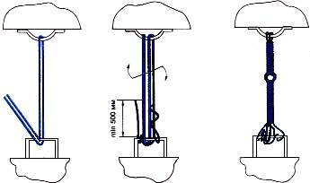
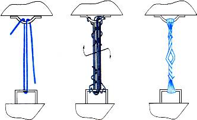

По третьему способу ВГМ закрепляют четырьмя растяжками из проволоки диаметром 6 мм и четырьмя упорными брусками.
Способы установки растяжек
Способ 1. Растяжка, обвязка выполняется из одной непрерывной нити проволоки. Один конец проволоки, как показано на рисунке ниже, обводят два раза вокруг увязочного устройства вагона (груза) и закручивают не менее двух раз вокруг нити. Другой конец проволоки пропускают через увязочные устройства последовательно на грузе и вагоне, формируя растяжку, обвязку с необходимым числом нитей. Конец проволоки заделывают на увязочном устройстве вагона (или груза) порядком, указанным выше, обводя его вокруг половинного количества нитей растяжки, обвязки. Концы проволоки для заделки должны быть длиной не менее 500 мм. Направление обвода концов нитей при заделке должно быть таким, чтобы при последующем скручивании растяжки их заделка не ослаблялась. Нити растяжки, обвязки скручивают ломиком или другим приспособлением до натяжения.
Рис. Установка растяжек по способу 1
Способ 2. Растяжка, обвязка изготавливается из одной непрерывной нити проволоки. Нить пропускают через увязочное устройство вагона (груза) и перегибают на нем, образовывая прядь из двух равных по длине нитей как показано на рисунке ниже. Далее прядь заводят в увязочные устройства последовательно груза и вагона, формируя растяжку, обвязку с необходимым числом нитей. Конец пряди обводят два раза вокруг увязочного устройства вагона (груза), затем концы проволоки - по отдельности вокруг половинного количества нитей растяжки, обвязки. Требования к заделке концов и скручиванию растяжки, обвязки аналогичны способу 1.

Рис. Установка растяжек, обвязок по способу 2
Способ 3. Растяжку, обвязку формируют из пряди, состоящей из двух непрерывных нитей проволоки как показано на рисунке ниже. Прядь пропускают через увязочное устройство вагона (груза) и перегибают, оставляя концы для заделки длиной не менее 500 мм, один из которых закручивают не менее двух раз вокруг пряди. После формирования растяжки каждый конец пряди по отдельности закручивают аналогичным порядком вокруг разных прядей.

Рис. Установка растяжек, обвязок по способу 3
Число нитей проволоки в растяжках и количество скоб или гвоздей для установки упорных брусков определяют по таблице.
|
Масса машины |
Число нитей проволоки в растяжках шт. |
Расход проволоки на машину с учетом увязки бортов платформ |
Количество скоб на упорных брусок, шт. |
Всего скоб на машину, шт. |
|
|
кг |
пог. м |
||||
|
До 15 |
4 |
10,0 |
45 |
2** |
8** |
|
15,1 – 25 |
6 |
14,5 |
65 |
3 |
12 |
|
25,1 - 50 |
8 |
19,0 |
85 |
3 |
12 |
* Количество скоб без учета дополнительного закрепления от поперечного перемещения.
** Взамен двух скоб допускается применять восемь гвоздей диаметром 6 им и длиной 200 мм.
Машины массой до 25 т при перевозке на платформах с открытыми продольными бортами дополнительно закрепляют от поперечного перемещения строительными скобами диаметром стержня 12 мм или боковыми брусками размером 100×100×2000 мм. Каждую машину с гусеницами шириной 400 мм и более закрепляют восемью скобами, а при меньшей ширине — двенадцатью скобами.
Скобы забивают в пол платформы с внутренней стороны гусениц перпендикулярно к ним против крайних опорных катков группами по две или три скобы. Расстояние между скобами в группе должно быть 150—200 мм, зазор между гусеницей и скобами— 10—15 мм. Ближний к гусенице рог скобы забивают наполовину, а дальний— полностью.

Боковые бруски укладывают вдоль каждой гусеницы с ее внутренней стороны и прибивают каждый брусок восемью гвоздями диаметром 6 мм и длиной 200 мм. Зазор между гусеницей и боковыми брусками должен быть 10—15 мм как показано на рисунке ниже.

Рис. Закрепление военной гусеничной машины от поперечного
перемещения: а — закрепление скобами; б — закрепление боковыми брускам
Подготовка машины к погрузке
Для закрепления ВГМ на платформе перед погрузкой необходимо:
— натянуть гусеницы как для движения по шоссе;
— тщательно очистить от грязи, а зимой от снега и наледи;
— проверить исправность тормозной системы и стопоров башни;
— привести в положение для транспортирования по железной дороге в соответствии с инструкцией по эксплуатации.
Порядок размещения и закрепления ВГМ на платформе
1. Машина устанавливается на платформе симметрично ее продольной и поперечной оси и отмечаются места укладки упорных брусков.
Бруски укладывают вплотную к гусеницам длинной стороной поперек платформы и прибивают к полу строительными скобами или гвоздями диаметром 6 мм.
2. Машина передвигается вперед до тех пор, пока освободится место на платформе для установки задней пары упорных брусков. Устанавливают заднюю пару упорных брусков.

3. Машина передвигается назад до тех пор, пока освободится место на платформе для установки передней пары упорных брусков. Устанавливают переднюю пару упорных брусков.

4. Машина возвращается в перевоночальное положение.

5. Машина закрепляется проволочными и табельными растяжками.
Подготовка погруженных машин к перевозке
Для перевозки погруженной и закрепленной ВГМ на платформе, необходимо:
— поставить на передачу заднего хода и затормозить;
— рычаг коробки передач и педаль тормоза после этого опломбировать;
— рычаг подачи топлива установить в нулевое положение.